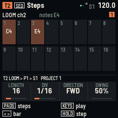

RELAY-16
RELAY-16 turns the M-VAVE FM-1 or the M-VAVE SMK-37 into a sequencer for other instruments. It makes no sound of its own. Sixteen tracks play another FM-1 running LOOM-8, a hardware synth or a DAW, over USB, Bluetooth MIDI and, on the SMK-37, the TRS jack.


Version 0.5. Not yet tried on a unit: it builds for both boards and passes its tests in fm1-base's simulator. Installing is at your own risk; M-VAVE's updater puts the stock firmware back.
Install (Chrome or Edge on a computer, the unit connected by USB):
- FM-1
- SMK-37 Pro (and the Starrykey 37 Play)
- SMK-37 Elite
- MKE-P37
More:
- Manual: every page and control, playing a LOOM-8 FM-1, saving.
- Try it in the browser: the FM-1 build, running the same code. Pick a MIDI output in its bar (Chrome or Edge) and it plays your synth.
- Download the packages for the command-line installer,
python3 tools/fm1_install.py FILE: FM-1, SMK-37 Pro, SMK-37 Elite, MKE-P37. - Source: MPL-2.0. Built on fm1-base and felucca-bsp, from Felucca by Leo Kuroshita, Hügelton Instruments. The SMK-37 board layer is by M. Geisler (genkigenki) and Kerem Kilic (keremimo).
What it does
- 16 tracks of 8 patterns, up to 64 steps each. Each pattern has its own length, note value, direction and swing.
- A step holds a chord of up to 4 notes, with velocity, length, micro-timing, chance, a condition, ratchets, glide, accent and 4 CC locks.
- Each track has a device profile (LOOM-8 synth or kit, JIANT FM synth or DRUM-X, Clipper, GM drums, a drum machine, the stock FM-1, any synth), so its CCs and drum lanes have names.
- 16 scenes, a 32-slot song, mutes, solo, fills, live and step recording, Euclid and random generators, undo.
- MIDI clock out or in. USB host for a synth or another FM-1 through a powered hub. Bluetooth MIDI both ways.
- On the SMK-37: the pads are the steps, the keybed plays with velocity, the faders play CC lanes, and the TRS jack is MIDI out.
- Four project slots, and a help card for every button: hold it for a second.
- Per-port timing and auto-reconnecting Bluetooth: two LOOM-8s, one wired and one on Bluetooth, play all 16 tracks in time.
M-VAVE, FM-1 and SMK-37 are trademarks of their owners. RELAY-16 is not affiliated with M-VAVE.